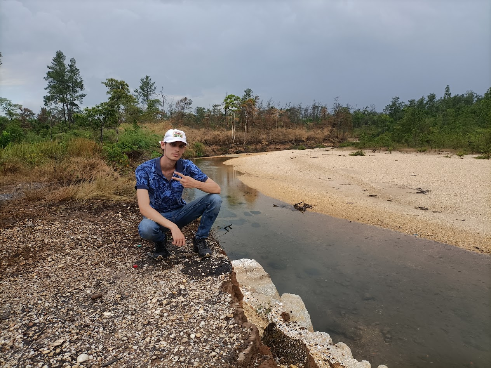

DÉBUT DE L'AVENTURE ARGENTINE
Ça y est, les sacs sont bouclés ! Après des mois de préparation, nous voilà prêts à décoller pour Buenos Aires. L'organisation n'a pas été simple, entre les visas et le matériel photo, mais l'excitation prend le dessus. Voici un petit point sur notre itinéraire prévu et nos premières impressions avant le grand départ...
lire plus